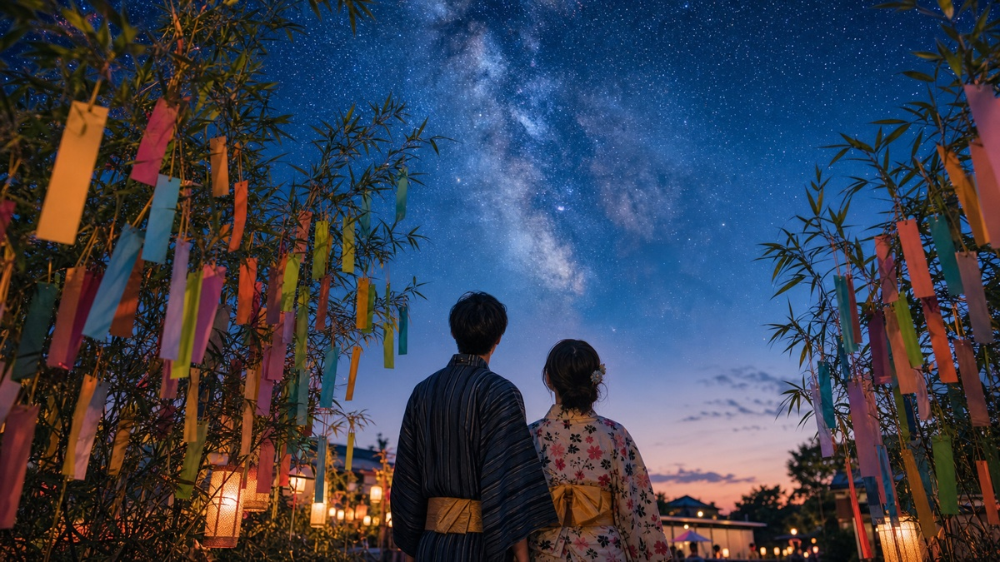

Tsukimi é o costume japonês de contemplar a lua de outono. Em 2026, o Chūshū no Meigetsu, a lua famosa do meio do outono, cai em 25 de setembro.

O que se faz no Tsukimi
A imagem clássica reúne lua cheia, susuki, bolinhos tsukimi dango e ofertas sazonais. A data convida a observar o céu com calma.
Mais que paisagem bonita
Tsukimi fala de estação. O calor do verão começa a recuar, a luz muda e o calendário passa a chamar atenção para colheita, céu limpo e alimento.
Onde aparece hoje
Além de eventos tradicionais, Tsukimi aparece em produtos sazonais, menus, doces, decoração e campanhas comerciais.